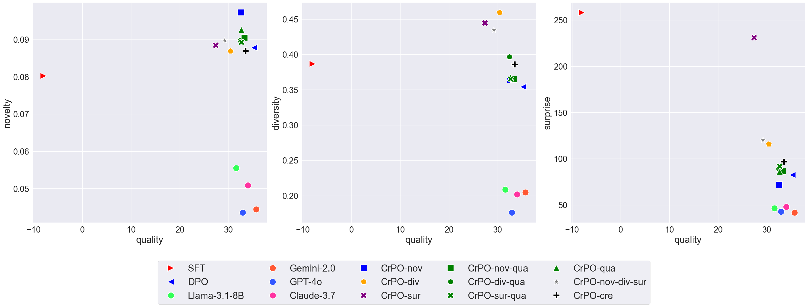
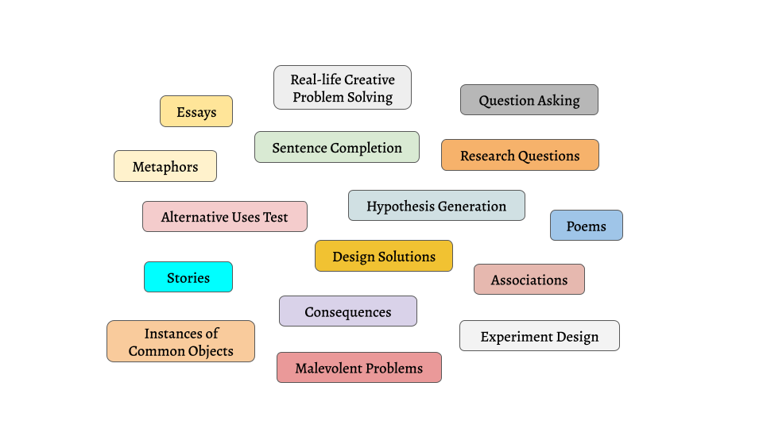
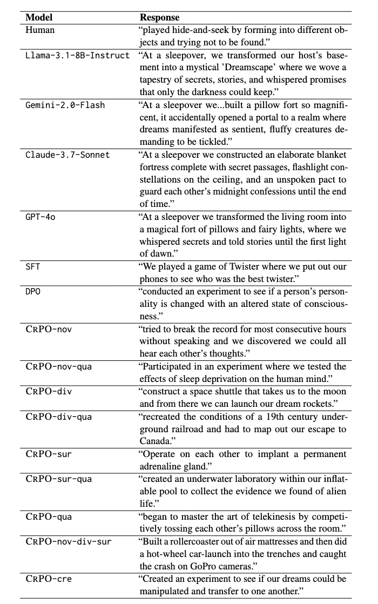

Creative Preference Optimization
Abstract
While Large Language Models (LLMs) have demonstrated impressive performance across natural language generation tasks, their ability to generate truly creative content—characterized by novelty, diversity, surprise, and quality—remains limited. Existing methods for enhancing LLM creativity often focus narrowly on diversity or specific tasks, failing to address creativity’s multifaceted nature in a generalizable way. In this work, we propose Creative Preference Optimization (CrPO), a novel alignment method that injects signals from multiple creativity dimensions into the preference optimization objective in a modular fashion. We train and evaluate creativity-augmented versions of several models using CrPO and MuCE, a new large-scale human preference dataset spanning over 200,000 human-generated responses and ratings from more than 30 psychological creativity assessments. Our models outperform strong baselines, including GPT-4o, on both automated and human evaluations, producing more novel, diverse, and surprising generations while maintaining high output quality. Additional evaluations on NoveltyBench further confirm the generalizability of our approach. Together, our results demonstrate that directly optimizing for creativity within preference frameworks is a promising direction for advancing the creative capabilities of LLMs without compromising output quality.
Main Results
CrPO significantly enhances the creative output of LLMs while maintaining high output quality.
Multi-task Creativity Evaluation (MuCE)
We introduce MuCE, a large-scale preference dataset consisting of more than 200,000 human responses and ratings for more than 30 creativity assessments.
Example outputs
Example model (and gold human) responses to the prompt “At a sleepover we ...” from the Sentence Completion task.
BibTeX
@article{ismayilzada2025creativepreferenceoptimization,
title={Creative Preference Optimization},
author={Mete Ismayilzada and Antonio Laverghetta Jr. and Simone A. Luchini and Reet Patel and Antoine Bosselut and Lonneke van der Plas and Roger Beaty},
year={2025},
eprint={2505.14442},
archivePrefix={arXiv},
primaryClass={cs.CL},
url={https://arxiv.org/abs/2505.14442},
}}